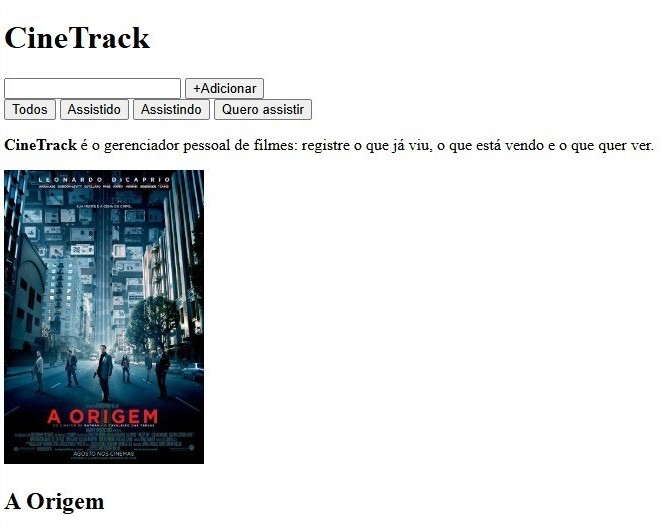

Filmes Cadastrados
| Título | Ano | Gênero | Status |
|---|---|---|---|
| A Origem | 2010 | Ficção científica | Assistido |
| Parasita | 2019 | Suspense | Quero Assistir |
| O auto da compadecida | 2000 | Comédia | Assistido |
| Duna: parte 2 | 2024 | Ficção científica | Quero Assistir |
| Interestelar | 2014 | Aventura | Assistido |
| Cidade de Deus | 2002 | Drama | Assistido |
Protótipo da Aplicação

Estrutura de Dados
Como os dados são organizados
- Título: Nome do filme.
- Ano de Lançamento: Ano em que o filme foi lançado.
- Gênero: Categoria(s) do filme (ex: Ação, Drama, Animação).
- Diretor: Nome do(a) responsável pela direção.
- Duração: Tempo total de exibição (em minutos).
- Status: Situação atual (Assistido ou Quero Assistir).
- Sinopse / Avaliação: Resumo da trama ou nota/comentário pessoal.